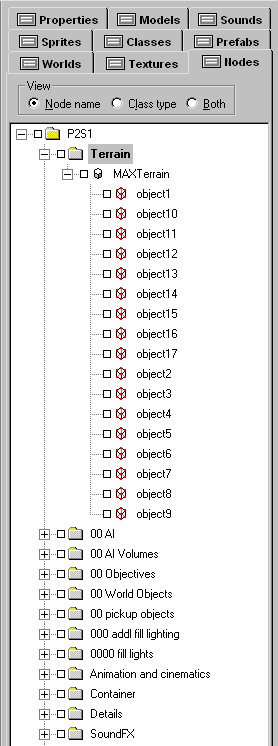
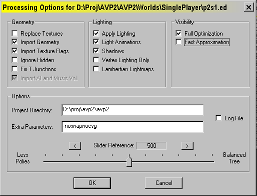
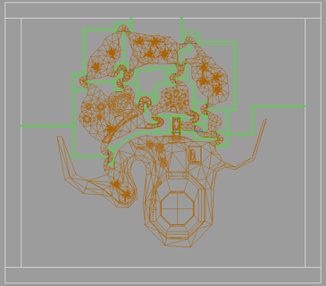
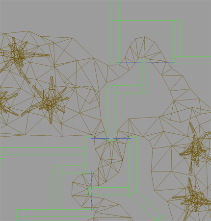
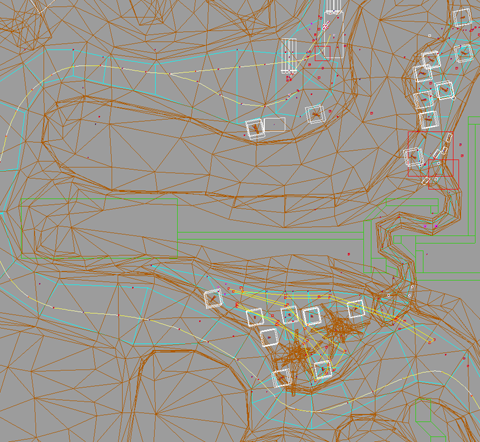

Importing geometry from external 3D applications and using it appropriately – or, how I learned to stop worrying and love the splitweight slider
Included in this release are plugins designed to export world geometry from Alias/Wavefront’s Maya and Discreet’s 3d Studio Max. The geometry you export can be textured and UV mapped in these external tools and that information will translate over into DEdit. However, this is not a simple process, so strap in and prepare to absorb knowledge.
Notes: the instructions in this document were written for 3d Studio Max version 3.0 and Maya version 4.0. Plugins are provided for other versions of these programs, but these instructions may not be fully accurate for them. Be sure to read the documentation provided with your 3d application. This guide assumes you already have a working knowledge of DEdit and the 3d program you will be using. If you don’t have any experience with DEdit, please read the other documentation provided with this release and work with the tool for a while before tackling this guide.
Setting up
DEdit and the AVP2 project – Setting up textures
Make sure you have plenty of free hard drive space. You are going to be creating Targa image files for every texture you are going to be using and .lta format geometry files for everything you build, which are much larger than the usual .ed format geometry files. I would recommend making sure you have at least 1 gigabyte of hard drive space free on the drive containing the AVP2 project.
The first step in preparing to use an external 3d program is setting up texture files for the 3d programs to use. Because neither of these programs recognizes .dtx files (Lithtech’s internal texture file format) you need to convert every single texture you want to use in the external 3d application into Targa (.tga) file format. You can do this in DEdit by right clicking on the texture name in the texture window, and choosing to export it as .tga. You can also select multiple textures (up to an entire folder’s contents) for conversion. This may bring up a window saying 'do you want to convert all to .pcx' - that's a bug, ignore it and click yes. It will save them all as Targa format anyways, in that same folder.
You must put the Targa format file for a given texture in the same place as the .dtx format file. For example, if you want to use the texture WorldTextures/Walls/Walls04/wall.dtx, you should put the Targa file in the same place: WorldTextures/Walls/Walls04/wall.tga.
If you are making .tga format files in an external application such as Photoshop and are creating new texture directories, make sure to follow the same guideline about placing the .tga file in the same location as the .dtx file. In this case, you can copy or move the original .tga’s you used to make the texture originally into your new texture directories instead of going through the whole export process.
3d Studio Max – plugin setup
If you are using 3d Studio Max version 3.0, put the provided files MaxWorldImport30.dli and MaxWorldExport30.dle into the 3d Studio Max plugins directory and restart 3d Studio Max.
If you are using 3d Studio Max version 4.0, put the provided files MaxWorldImport40.dli and MaxWorldExport40.dle into the 3d Studio Max plugins directory and restart 3d Studio Max.
Maya – plugin setup
If you are using Maya version 3.0, put the MayaWorldExport30.mll into the Maya plugins directory (typically AW/Maya3.0/bin/plug-ins), put LithTechWorldExportOptions.mel and LithTechWorldImportOptions.mel into the scripts directory in the base Maya project directory (typically Desktop/Documents/Maya/scripts), restart Maya, and enable the Lithtech plugin via Maya’s plugin manager.
If you are using Maya version 4.0, put the MayaWorldExport40.mll into the Maya plugins directory (typically AW/Maya4.0/bin/plug-ins), put LithTechWorldExportOptions.mel and LithTechWorldImportOptions.mel into the scripts directory within the Maya 4.0 directory in the base Maya project directory (typically Desktop/Documents/Maya/4.0/scripts), restart Maya, and enable the Lithtech plugin via Maya’s plugin manager.
Building, texturing, and exporting
General building guidelines
In DEdit, the basic building block is the brush – a CSG solid. When using a 3d package, though, the basic building block is the polygon – a flat surface defined by 3 or more vertices. When building geometry in a 3d package, you don’t have to worry about building solid brushes out of polygons – the engine can handle single-sided polygon meshes imported from 3d programs in various ways (outlined in the section below on DEdit and the engine.)
Generally, you’ll want to create almost everything out of triangles. The only exception is when you are creating a flat surface that you know will be evenly lit across its face, or is fairly small in at least one planar direction. Using triangles provides better results from gouraud shading and directional lighting (the two lighting methods you will use on 99% of exported geometry) and also insures that your faces will never be non-planar. You’ll also want to keep meshes evenly constructed – avoid having a large number of very thin triangles close together, for example.
In 3d Studio Max and Maya, 1 unit of measurement corresponds to 1 world unit in DEdit. An average character’s height will be about 100 units, and a terrain will therefore range anywhere from 5000x5000 units on up to 75000 units on a side or more. You may need to adjust your cameras’ clipping planes in your 3d program in order to see everything at once!
The recommend ceiling for number of visible terrain polygons at once is around 1000 in the AVP2 engine, but you can push more in spots if you are willing to trade framerate for detail. Generally a map shouldn’t have more than 15000-20000 triangles in it, and if you are building a simple terrain map where nothing blocks your view from one end of the map to the other, you should use far fewer triangles than that.
There are many tutorials on the web about how to model things like terrain. One easy way to get started is to create a flat mesh of triangles and begin pushing and pulling on its vertices to create hills and valleys. Another good method is to build a simple rock formation, texture map it, then start copying it out into more complicated forms and sewing them together. Experiment and have fun!
3d Studio Max – texturing
Max uses ‘materials’ to define an object’s surface characteristics, including what texture it uses. The name of the material should be the same as the name of the texture. For example, if you are using the texture WorldTextures/Walls/Walls04/whatever.dtx, you should create a material and name it 'whatever'.
Set up that material so it has a diffuse color map that uses the file WorldTextures/Walls/Walls04/whatever.tga. You'll also want to tell it to show the map in the viewport, and change the 'alpha source' to 'none/opaque'. Repeat this process for each texture you are going to use in building your world geometry. Once you're done making materials for all your world textures, I suggest putting them all into a material library and saving it. And backing it up.
Once that's all set up, you can texture geometry like crazy. The exporter uses and understands UV mapping. Therefore, after building a chunk of geometry and applying a material to it, you need to add the "UVW Map" modifier to the object's stack to initially map the texture. You can also go further and add the "Unwrap UVW" modifier and go down to point-by-point texture mapping if you so desire, but it's not required.
I am aware of a method in 3dsmax where you can apply individual textures to faces within an object. I don’t know how to do this in 3dsmax, but I am told that the plugin will recognize this and export it correctly. If you are a 3dsmax guru and are used to working this way, try it out.
3d Studio Max – exporting
Once you are ready to export, choose File -> Export and select Lithtech World as the file type. Give your file a name and pick save. The plugin will present you with some options.
Turn the ‘Use Max Texture Info’ button on and the ‘Pivot Point to Origin’ button off.
Whether or not to use the ‘Export Objects as Brushes’ button is a complicated decision, and you should read the section below on brushes before checking this item off as ‘understood’, but generally you will always want this turned on.
For the Base Texture Path, you should choose the directory that contains the WorldTextures directory. On my system, for example, this would be D:\Proj\Avp2\Avp2. Your installation may differ.
If there is a problem that occurs during exporting, the plugin will show a warning saying “Found Improper Material Assignments! Number of bad faces: X” where X is the number of problem faces. Possible causes for this include:
-geometry in the level has no material assigned to it
-a material assigned to the geometry in the level doesn’t point to a valid .tga file
-a material assigned to the geometry in the level points to a .tga file which is not in the Base Texture Path
Once the exporter is done, you should have an .lta file which contains your texture-mapped geometry. Skip the Maya section below and go to the section on working with exported geometry in DEdit!
Maya – texturing
In Maya, create a material in the Hypershade panel. (Right click in window -> create -> material -> lambert, for example.) Lambert is a good choice. Double-click on the new material and click on the checkerboard button next to the Color slider to bring up the Create Render Node window. Choose the textures tab at the top, turn on With New Texture Placement, look in the 2D Textures section of the choices available to you, make sure the Normal radio button is checked, and choose File. Maya will bring up the Attribute Editor for the file; click on the folder icon to choose a .tga image that corresponds to a texture in your level.
Go back to the Hypershade panel, and select all 3 parts of the shader network you’ve just created (place2dTexture, file, and lambert) and go to the panel’s Edit menu. Choose Duplicate -> Shading Network, and in the resulting duplicated network, double-click on the file portion to set the next .tga image. Do this for each texture you are planning to use in a level. Once you have materials created for each texture you will be using, I suggest saving a scene or library with these materials and backing it up so you don’t have to repeat this process.
Map your new materials onto your polygonal geometry using Maya’s UV tools. If you’re not familiar with them, I highly recommend reading the documentation. Try to keep things as simple as possible.
Maya – exporting
You can use either File->Export Selection or File->Export All. In either case, choose the options box for the menu item. Choose LithTech World as the file type, and give your file a name.
Turn the ‘Use Maya Texture Info’ button on.
Whether or not to use the ‘Export Objects as Brushes’ button is a complicated decision, and you should read the section below on brushes before checking this item off as ‘understood’, but generally you will always want this turned on.
For the Base Texture Path, you should choose the directory that contains the WorldTextures directory. On my system, for example, this would be D:\Proj\Avp2\Avp2. Your installation may differ.
Once the exporter is done, you should have an .lta file which contains your texture-mapped geometry. Continue now with the section on working with your geometry in AVP2!
Working with exported geometry in DEdit and the engine
Concepts
The AVP2 engine is very flexible – as one of our designers here remarked, it will gladly give you enough rope to hang yourself. Since this is likely your first time making a terrain in this engine, I imagine you might have grandiose dreams of creating a scale reproduction of a 100-square kilometer stretch of LV-426, or an intricately detailed interior of the atmospheric processor plant hive. I highly recommend you start with something smaller and less ambitious, and get a feel for how things work. Otherwise, you will find yourself frustrated, baffled, and stymied very quickly. Once you have some knowledge and experience under your belt, you will find it much easier to create larger-scale levels.
For examples of geometry that was created and textured externally, look at the terrain in m1s1, the infested hive material in m4s1, the final section of m7s1, and the levels a5s1, p1s1, p2s1, p3s1, almost all of p5s1, and much of p7s2. You’ll see that you can build outdoor terrains, but also many other sorts of geometry. These use a variety of techniques, some of which are easier to deal with than others.
1. The easiest variety of level to do – and honestly, the only one I recommend you do for an entire level – is the simple terrain level. (For example, see p1s1 and p2s1.) Terrain levels can be physically very large, have lots of polygons (up to 20,000 in the entire map) and use terrain occluders to block visibility from one section of terrain to another. It processes quickly and is relatively easy to manage. The only restriction on terrain is that it can ONLY be lit by a single static global lightsource (in addition to a global ambient light value) – it cannot be lit by point or directional lights, and cannot be lightmapped. You can build overhanging masses or even caves with this method, but every surface will still be lit by the global lightsources, so the floor of your cave will still be lit as brightly as the ground out under the sky. This type of level uses a single Terrain Object, which contains the brushes that make up the geometry for all the terrain in the level.
2. The next variety is the level built out of TranslucentWorldModel objects. (For example, see p5s1.) You can import an .lta file and bind its brushes together under a TranslucentWorldModel, and it will act somewhat like normal geometry. These types of levels can also be physically very large, have a large number of polygons, but unlike terrain objects, these can be lit by point lights and directional lights, and use gouraud shading and lightmapping. They process quickly, but they can be difficult to manage. You will need to build a shell of brushes around the geometry you import in order to block visibility from one area to another, but because TranslucentWorldModel objects are much more ‘aggressive’ about being drawn than other types of geometry, and because you may find it difficult to fit a shell around complicated and twisted geometry, you will often need to use triggers and group objects to actually send visibility commands to the various TranslucentWorldModels making up the rooms of your map to ‘help’ the visibility determination along. Needless to say, this is time-consuming to set up, and unless you do it just right, can do horrible things to someone playing the level. In addition to this problem, you will also have to import the geometry of each room or visible area in the map separately, in order to build separate TranslucentWorldModel objects for each room or visible area. I don’t recommend using this method to build an entire map because of the difficulty involved, but it can be the best way to produce certain results.
3. The last variety is the level built out of detail 1 single-sided geometry. (For example, see a5s1.) This is like the method above, but instead of binding the geometry to a TranslucentWorldModel, you simply let it be an ordinary brush, and set it to detail 1. Like the method above, you have to build a simple shell around the imported geometry to block visibility, but because the imported geometry isn’t part of a worldmodel, it will be blocked out by the shell much more effectively. Like the method above, you can use any lighting method you like. The problem with this method is that you need to carefully adjust the splitweight when processing the map (the slider bar in the processor) in order to avoid polygons being stripped out by the processor. This problem becomes rampant when dealing with large polycount levels, or levels where the geometry is not on the grid. I do not recommend using this method to build an entire level at all because it can be extremely time-consuming to try to track down disappearing polygons – and you ultimately might not be able to fix all of them, and the despair and the wailing and the gnashing of teeth shall be terrible indeed.
Levels can mix and match these methods, though. For example, you might want to build a terrain level, with some tunnels built in DEdit with a small section of infestation built externally, and a crashed spaceship in a later section. You could put the brushes making up the terrain into a Terrain object, the brushes making up the infestation into a TranslucentWorldModel object, and leave the spaceship brushes alone and set them to detail 1. In isolated spots like this, the 2nd and 3rd techniques outlined above become very useful.
In addition you can use normal detail 0 brushes created in DEdit along with any or all of these three methods of dealing with imported geometry. Be aware that combining a highly detailed, complicated DEdit-created interior map with a very large terrain will result in extremely long processing times. You may have to cut back your ambitious map to be two seperate maps, where the interior ends in a ‘foyer’ where you transition to the next map, which contains just the foyer itself and some terrain.
Brushes
Now, when importing geometry you’ll get one of two things, depending on whether or not you checked ‘Export As Brushes’ in the exporter plugin options:
(Export as Brushes = off) A terrain object, which contains brushes that make up the geometry. This will be made of 1 brush per triangle in the imported mesh.
(Export as Brushes = on) A set of brushes that make up the geometry. This will consist of 1 brush per 3dsmax or Maya object. For example, if you create a cube in Maya and then duplicate it several times, each duplicated cube is 1 object in Maya, so each cube will become 1 brush in DEdit.
Though it seems odd, the 2nd method is actually best. It may seem counterintuitive to have a brush that is shaped like a terrain mesh – traditionally a ‘brush’ is a convex polyhedron, after all. However, when you turn the NoSnap flag on brushes in AVP2 to ‘true’, what you are essentially doing is telling the engine to ignore those rules and simply use all the polygons making up the brush individually. When you bind such a brush to a Terrain object, you tell the brush not to divide the world’s main BSP, so the geometry will process correctly and show up in the world at runtime. (Terrain objects get sorted into their own peculiar BSPs.)
Why is using Export as Brushes better? Well, the 1st method is fine for small terrain levels. As levels grow larger, however, you will find that it takes longer and longer for the level to update objects when opening. This is less a concern for end-users than it was for us during development, because the object classes won’t be constantly changing on you, but you will still need to update the level after importing terrain. With a very large terrain, it can take half an hour or more to update if you are using the 1st method, because there are so many brushes in the level (each triangle in the terrain having become a brush.) Using the 2nd method, you bring in the geometry and then bind it to a terrain object yourself, but with far fewer brushes in the level, you will have less problems updating the level.
In addition, if you are going to be using your imported geometry to make TranslucentWorldModels or detail 1 brushes instead of terrain, the lighting will be much nicer on each object if its triangles are grouped together into one brush. The gouraud shading in the processor uses vertex normals, but the engine only knows whether to ‘share’ a vertex between faces if those faces are grouped together into the same brush. What this essentially means is that if you want to gouraud shade an imported object, it will look smooth and round if it consists of one brush – if it consists of a large number of triangles, each triangle an individual brush, it will look faceted and ugly. Remember that you can join selected brushes together using the J key, and split them into component brushes by hitting control-J, if you ever need to fine-tune how faces are joined together, but these changes will be lost if you re-import the geometry, so it’s better to get the objects set up correctly in the 3d package.
You might ask now, why not just export one giant brush? Internally DEdit has a limit of 256 vertices per brush. You can go over that limit, but DEdit’s memory requirements will climb very steeply. You may have other problems also. It’s best to divide up your map logically in your 3d package – this rock outcropping here is one object, this tree is another object, this giant fungus is another object, etc. That way you will have a good balance between not having an extraordinary amount of brushes in the level and not having too many 257+ vertex brushes.
Some additional notes on imported brushes:
*Please note if you import geometry from a 3d package, whether you choose Export as Brushes or not, and you fail to set it to NoSnap = true or you fail to use 1 of the three methods (Terrain object, TranslucentWorldModel, or detail level 1) outlined in this section, you will have serious problems processing and running the level. You must set such a brush to NoSnap and use 1 of these methods for the geometry to work correctly.
*Another important note: if you bind geometry to a Terrain object or a TranslucentWorldModel, do not set the geometry to be detail level 1. It should be detail level 0. This applies to any other objects also, and to brushes created normally in DEdit. Any brush bound to any object (Door, HackableWorldModel, etc.) must be detail level 0.
*Also, don’t ever do anything goofy like bind geometry to a TranslucentWorldModel, then bind the TranslucentWorldModel to another object like a terrain object. The only children either of these objects should have are brushes.
Setting up terrain
You should create a world in DEdit that will house your terrain. You cannot simply open the .lta file created earlier – you must import it into an existing .ed file. This is a good thing, however, because when you create a terrain level, or a level with exported geometry, you’ll want to be able to tweak the geometry in the 3d program and bring those changes into DEdit, but you’ll also want to preserve all the objects you have added to the world in the .ed file. Having the exporters create a separate .lta file from your main world lets you simply delete the nodes containing the geometry and re-import it, without having to move or copy the rest of the level’s objects and geometry from one file to another.
For example, let’s say you want to create a desert terrain level. Make an .ed file called desert.ed. Put a WorldProperties object in it. Create a terrain and export it as desert_geometry.lta. Open desert.ed in DEdit, create a node to contain the terrain, set it to be the active parent, and choose File->Import World. Select desert_geometry.lta.
If you are using the option to export as brushes, when re-importing terrain (for example, after deciding to make some changes after running through the level in the engine) in multiselect mode you can unselect everything in the .ed file, select the terrain node, then control-click on the terrain object to unselect just the object itself, leaving the brushes contained therein selected. Delete the brushes, make the terrain object the active parent, and then import the .lta file – the brushes will flow straight into the terrain object.
There should only be 1 terrain object in a level. You might set up a level where there are several different spots of terrain, separated by other geometry – don’t worry about it, all the terrain geometry should still be under that 1 single terrain object. The processor will sort out which bits go where. The terrain in your node tree should look like the example at left.

Once you have your terrain brushes imported and they are contained within a terrain object, you will want to update the objects in the level. This is because the brushes are assigned a group of properties by the export plugins, but those properties are different than the properties the AVP2 project expects. To update them, save and close the level, then open it again and choose ‘Yes’ when it asks you if you’d like to update the objects in the level. This will clear out any unused properties which can often be confusing (though not really harmful to the level itself.)
Now, you’ll want to make sure you have the correct flags set on the brushes that make up your terrain. The flags should be everything false, except solid=true, nosnap=true, blocklight=true and directionalLight=true. Terrain brushes should be detail level 0.
Also, if you turn on skypanning in the WorldProperties object, you can choose skypan=true on your terrain brushes to get cloud shadow effects. Good settings for skypanning (in the WorldProperties object) are:
PanSkyTexture = WorldTextures\Skypan2.dtx
PanSky = True
PanSkyOffsetX = 40
PanSkyOffsetZ = 40
PanSkyScaleX = 30
PanSkyScaleZ = 30
If you are using skypanning, and there are no brushes in your level that are not terrain brushes, you should add 1 small brush somewhere out of sight which is set to lightmapping = true. The engine needs a lightmap somewhere in the level in order to do cloud shadowing – just a strange quirk of the engine.
If you encounter problems where the sky seems to drop out from certain angles or in certain places in the map, turn AllSkyPortals on in the WorldProperties object. If you still encounter this problem, make sure that there are no brushes completely blocking off one or more of the SkyPortal brushes from being seen from at least 1 place in the map.
You can experiment with gouruad shading on your terrain instead of directionalLight but the results will often look faceted. This was handy though for the floor of p3s1, where we wanted some splashes of light coming from the gate posts, and the rest of the surface was dark enough that you don’t notice the faceting.
To light terrain, you will need 1 StaticSunLight object in your level. This object will act as a global directional light source like a sun or moon. The inner and outer colors determine the color of light – for example, in our desert level, we might choose a fairly bright yellowish-white for the inner color, and maybe a brownish-grey for the outer color. Alternatively, we could leave the outer color black, choose a little bit dimmer yellow for the inner color, and add ambient light to the world through the World->World Info string. (More details on that below.) You can also experiment with the Bias setting of the StaticSunLight object to change how quickly the inner color falls off to the outer color. The intensity setting in this object should be left alone.
Now, StaticSunLight requires working skyportals to cast light from. Skyportals are large brushes with all their flags set to false except solid=true, blocklight=true, and skyportal=true. The terrain level should be enclosed by 1 of these brushes on each side, 1 above, and 1 below. Not only will this provide a place for the StaticSunLight to cast light from, it will also display the sky and enclose the level, enabling it to be processed and optimized.
Finally, the world info string should be set under World->World Info, and it should contain the following, without quotation marks: "TerrainSubDivSize 20000; PBlockSize 2048; LightTableRes 1024;". Without this a large terrain level will not process well at all. You can experiment with these values, but these are generally good for AVP2 sized terrains.
In addition, you can add the following after the last semicolon: “AmbientLight R G B;” where R G and B are values between 0 and 255 that represent red, green, and blue. For example, a very faint bluish cast to a level, like ambient moonlight, would be something like “AmbientLight 2 3 10;”. If you don’t specify an AmbientLight value in the world info string, it will not add any ambient light to a level.
Put in a Game Start Point, and drop in one of the prefab skies or make your own (covered in a separate document), and start processing the level. Here’s what your processor settings should look like:

If everything goes well, your level should process fairly quickly (though extremely physically large levels can take 30 minutes or more) and you should be able to run it and check it out.
Terrain advanced topics
Terrain occluders are very useful but they can be tricky to use. They are typically built as large solid brushes which block visibility. For example, if you have a box canyon, you would put occluders surrounding the box canyon, outside of the canyon’s geometry but following its winding path, to block off visibility around corners. Terrain occluder brushes should have all their properties set to false except for Solid = True, BlockLight = True, and TerrainOccluder = True. They should be set to detail level 0.
Hullmakers are also useful in helping the processor determine visibility. They are typically built as large single-sided polygons along a 90 or 45 degree angle that poke into the walls, floor, and ceiling around them. They force the processor to split up the visible regions along the plane of the hullmaker brush. Hullmaker brushes should be single sided and have all their properties set to false except for Solid = True, BlockLight = True, NoSnap = True, and Hullmaker = True. If you get a problem where parts of your level seem to be dropping out arbitrarily as you move through it, you might have forgotten to turn NoSnap on for a hullmaker brush somewhere.
Here’s an example image of a terrain prototype level – the occluders are the green tinted brushes, and the hullmakers are the blue tinted brushes. The white brushes forming a shell around the level are skyportals.


At right is a closer view of the occluders and the hullmakers:
Terrain occluders have an additional property - the best way to think of them is, visibility goes into the occluder but not beyond it. Let's say you have a big hill in the middle of a map nobody can climb. you want the hill to block out what's on the other side of the hill - but you want to be able to see the hill from all sides. Put a big occluder on the hill, covering the part nobody can climb (you don't want people going inside terrain occluders). That way the hill will always be visible, but will also stop the engine from drawing what's on the other side. Here’s an example image from p2s1, near the start of the map. There’s a large outcropping on the lower left of the map that blocks visibility, but all the polygons making up the outcropping are still visible from every angle because they are all inside one occluder.

AI volumes on terrain levels do not need to be level with the terrain. For example, if you’ve built a hillside, the bottoms of your AI volumes can be flat, as long as they extend down through the terrain over the entire surface of the brush. Typically your AI volumes on a terrain map will be much larger in the Y axis than in an ordinary map, because of this requirement.
TranslucentWorldModels and imported geometry
You can take your imported brushes and bind them to a TranslucentWorldModel object instead of a Terrain object. Brushes in this situation can have any property a brush would ordinarily have, including transparency and other effects. The only restriction is that brushes in this situation must have NoSnap set to True, and detail level 0. (Remember, any brush bound to an object of any sort should always be detail level 0.) Your TranslucentWorldModel object should have BlockLight set to False. Large TranslucentWorldModels tend to block light over very large areas of a map if this property is set to true. If you see spots in your level where the lighting seems to be dropping out for no apparent reason, this may be the cause.
Remember, TranslucentWorldModels do not block visibility, and often are blocked out by visibility ‘later’ than other geometry. (For example, if you have a U-shaped hallway and you are standing on one tip of the U, and there is a small TranslucentWorldModel at the other tip of the U, the engine may cull the walls around that TranslucentWorldModel making up that branch of the U, but still draw the TranslucentWorldModel itself.
Building an entire level out of TranslucentWorldModels is possible, as stated earlier, but it can be problematic. You need to build a shell of ordinary detail 0 brushes around such a level to provide a visibility framework. Note that such brushes should have lightmapping set to false if they are very large because large expanses of lightmapped surfaces can be costly to process and very, very large in memory footprint. Make sure to turn off lightmapping if your shell brushes will be completely obscured by TranslucentWorldModels; otherwise, you are just wasting memory.
Optimizing such a level is very tricky. Unless you can figure out how to optimize this kind of level on your own, using trigger objects with “msg TWM_x (visible 0/1)” style commands, you shouldn’t do it. (Group objects help also if you have lots of props in areas, because typically your visibility shell will have a hard time culling them out just as it does with TranslucentWorldModels. Send such messages to a group object containing the names of the TWM and the props.)
Imported geometry and detail 1
You can take your imported brushes and set them to NoSnap = True and detail level 1, and leave them in the world, unbound to any object. These brushes will be treated like normal map brushes, except they will not block visibility or the building of a visibility tree. This means that these types of brushes will not seal a level, and therefore you must have a shell behind them of detail 0 brushes. Otherwise, the brushes behave like any other ordinary brushes.
If you encounter polygons that are detail 1 which seem to disappear when you process the level, you may be facing the dreaded splitweight problem. When you use a large number of angled polygons, the depth of the BSP can become too great, and the processor will throw away polygons. You can compensate for this by adjusting the slider bar in the processor, which controls the splitweight value. Don’t ask me what this means. When I ask the programmers what this does, their alien language frightens and confuses me, and I retreat back into my cave, grunting territorially and shaking my biggest tree branch at them. I can’t even really tell you what direction to try adjusting it or how far – just that messing with it might save you if you are using lots of detail 1 geometry and some of it begins to mysteriously vanish.
The other option for fixing detail 1 geometry is binding it to a TranslucentWorldModel and setting the detail level back to 0. Many of our levels that started out as detail 1 geometry soon became a mixture of detail 1 geometry and TranslucentWorldModels.
Other uses
If you create a character, you can export its geometry to place into a map file as a brush so you can get a sense of scale within DEdit itself.
If you create an object of some sort and want to keyframe it, export its geometry and make a terrain out of it. Align the terrain brushes in DEdit with the model itself (a Prop object, for example) visually by compiling the map and looking to see if the two instances of the object in the world line up. Then, copy the brushes and the model and move them into position. Whatever rotation you apply to the brushes, set in the Prop’s rotation properties. When you have a string of these in place, take the duplicated Prop objects and change their class to Key. This is very useful for keyframing vehicles driving along terrain, etc.
Help! I do not understand!
http://www.avpnews.com – look for the mods and editing forum.